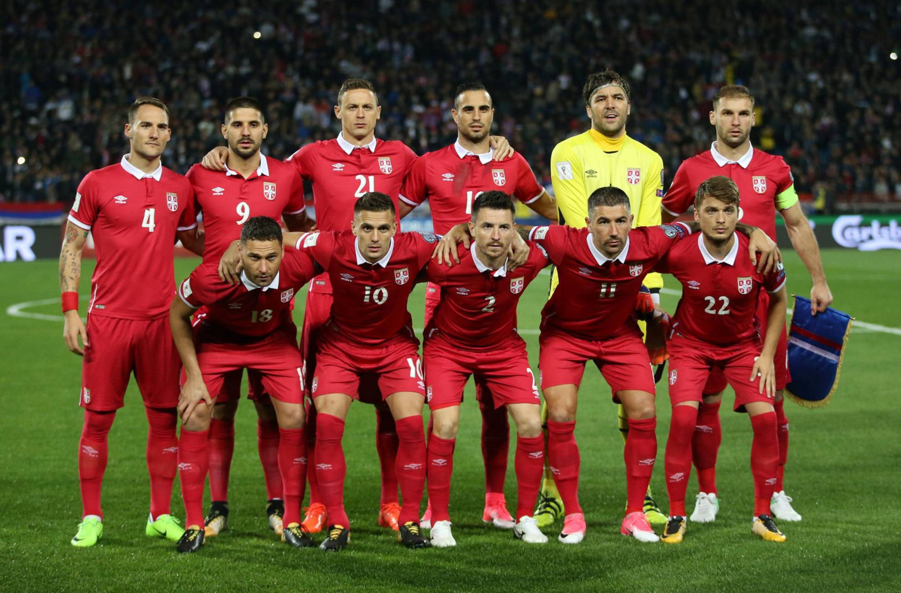

Ranking FIFA : 25° (agosto 2022).
¿Cómo se clasificó al Mundial? Ganó el Grupo A de las Eliminatorias europeas.
Rendimiento en 2021 (G-E-P): 8-5-1 (27 GF, 11 GC, +16).
Rendimiento en 2022 : 3-1-2 (8 GF, 7 GC, +1).
Predrag Rajković
Nikola Milenković
Stefan Mitrović
Strahinja Pavlović
Darko Lazović
Nemanja Gudelj
Sergej Milinković-Savić
Dušan Tadić
Filip Kostić
Dušan Vlahović
Aleksandar Mitrović.
Nacionalidad: serbio.
Edad: 57 años.
Contratado: 3 de marzo de 2021.
Récord en el cargo (G-E-P): 11-4-3.
Títulos en el cargo: Ninguno.
Victoria más notable: 2-1 sobre Portugal, Eliminatorias europeas 2022.
1930 Uruguay 4° (Reino de Yugoslavia)
1934 Italia -
1938 Francia -
1950 Brasil 5° (Yugoslavia)
1954 Suiza 7° (Yugoslavia)
1958 Suecia 5° (Yugoslavia)
1962 Chile 4° (Yugoslavia)
1966 Inglaterra -
1970 México -
1974 Alemania 7° (Yugoslavia)
1978 Argentina -
1982 España 16° (Yugoslavia)
1986 México -
1990 Italia 5° (Yugoslavia)
1994 Estados Unidos -
1998 Francia 10° (RF Yugoslavia)
2002 Corea y Japón -
2006 Alemania 32° (Serbia y Montenegro)
2010 Sudáfrica 23°
2014 Brasil -
2018 Rusia 23°
